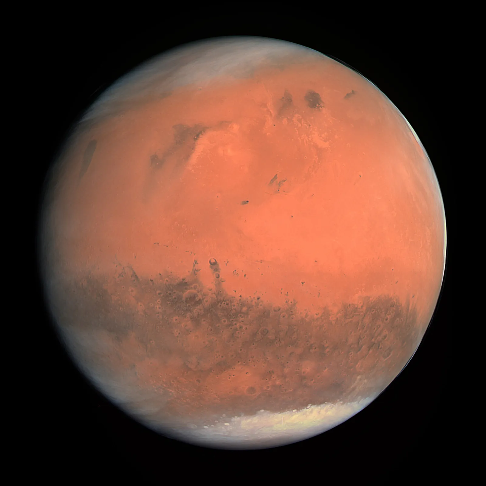

Marte é o quarto planeta a partir do Sol e o conhecido Planeta Vermelho.

O Monte Olimpo, em Marte, é o maior vulcão conhecido do Sistema Solar.

A cor de Marte vem de minerais de ferro oxidados no solo. O planeta tem atmosfera fina, calotas polares, vulcões e o Valles Marineris, um enorme sistema de cânions. Sua gravidade equivale a cerca de 38% da terrestre, e suas duas luas são Fobos e Deimos. Missões robóticas investigam sua geologia e a possibilidade de vida microbiana no passado.